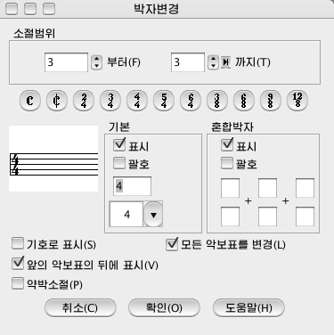

소절차림표\박자변경...
이 지령을 리용하여 악보표의 박자를 변경합니다.
<소절\박자변경...>차림표를 선택하면<박자변경>대화창이 표시됩니다.

- 소절범위 : 박자변경하려는 소절범위를 설정합니다.
- 기본
- 표시 : 기본박자를
표시/비표시합니다.
- 괄호 : 기본박자에
괄호를 붙입니다.
- 변경하려는 박자수를 입력하고 그 아래에 있는
튀여나오기차림표에서 박자의 소리표종류를 선택합니다.
- 혼합박자
- 표시 : 혼합박자를
표시/비표시합니다.
- 괄호 : 혼합박자에
괄호를 붙입니다.
- 그 아래에 있는 입력창에 혼합박자를 입력합니다.
- 기호로 표기 : 4/4, 2/2박자인 경우에만 선택됩니다. 이 항목을 체크하면 박자를 기호로 표시합니다.
- 앞의 악보표의 뒤에 표시 : 악보단의 첫번째 소절의 박자를 변경할 때 앞의
악보표에 마지막에 박자를 표시합니다.
- 약박소절 : 약박소절을 설정할 때에 이 항목을 체크합니다.
- 모든 악보표를 변경 : 이 항목을 체크하면 모든 악보표에 대하여 박자를
변경하고 체크를 해제하면 현재 유표가 놓인 악보표의 박자만을 변경합니다.
박자를 변경하려면
- <소절\박자변경...>차림표를 선택합니다.
- <박자변경>대화창이
표시됩니다.
- 박자변경하려는 소절범위를 설정합니다.
- 표준박자의 경우 박자그림기호들중에서 해당한 그림기호를 선택합니다.
- 표준박자가 아닌 경우 <기본> 또는 <혼합박자>항목에 박자를 설정합니다.
- <확인>단추를
누르면 박자가 설정됩니다.